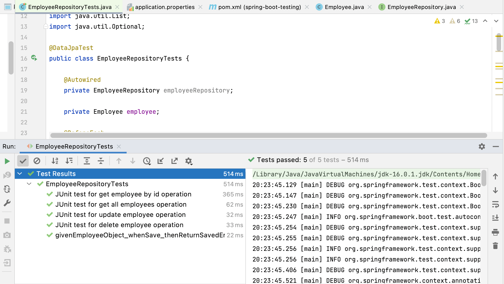

In this article, we will learn how to test Spring Data JPA Repositories using Spring Boot provided
@DataJpaTest annotation.
Sometimes we might want to test the persistence layer components of our application, which doesn’t require the loading of many components like controllers, security configuration, and so on.
So Spring Boot provides the @DataJpaTest annotation to test the only
repository/persistence layer components
of our Spring boot application ( The @DataJpaTest annotation doesn’t load
other Spring beans (@Components,
@Controller, @Service, and annotated beans) into ApplicationContext).
We use Spring boot starter test dependency to write JUnit tests for Repository layer components:
We use Spring boot starter test dependency to write JUnit tests for Repository layer components:
<dependency>
<groupId>org.springframework.boot
<artifactId>spring-boot-starter-test
<scope>test
</dependency>
The Spring Boot Starter Test dependency is a primary dependency for testing the Spring Boot Applications. It holds all the necessary elements required for the testing.
This starter includes:
Spring Boot Starter Test dependency adds all the required dependencies to Unit test Repository layer components so we don't have to add testing libraries.
Spring Boot provides the @DataJpaTest annotation to test the persistence
layer components that will
autoconfigure in-memory embedded databases and scan for @Entity classes and Spring Data JPA repositories.
The @DataJpaTest annotation doesn’t load other Spring beans (@Components,
@Controller, @Service, and
annotated beans) into ApplicationContext.
To test Spring Data JPA repositories or any other JPA-related components for that matter, Spring Boot
provides the @DataJpaTest annotation. We can just add it to our unit test
and it will set up a Spring
application context:
@ExtendWith(SpringExtension.class)
@DataJpaTest
class UserEntityRepositoryTest {
@Autowired private DataSource dataSource;
@Autowired private JdbcTemplate jdbcTemplate;
@Autowired private EntityManager entityManager;
@Autowired private UserRepository userRepository;
@Test
void injectedComponentsAreNotNull(){
assertThat(dataSource).isNotNull();
assertThat(jdbcTemplate).isNotNull();
assertThat(entityManager).isNotNull();
assertThat(userRepository).isNotNull();
}
}
In this article, we will focus on Unit testing Spring Data JPA repositories.
Let's create a Spring boot project from scratch to demonstrate Unit testing Spring Data JPA repositories.
Spring Boot provides a web tool called https://start.spring.io to bootstrap an application quickly. Just go to the website and generate a new Spring Boot project using the details below:
Here is the complete pom.xml for your reference:
<?xml version="1.0" encoding="UTF-8"?>
<project xmlns="http://maven.apache.org/POM/4.0.0" xmlns:xsi="http://www.w3.org/2001/XMLSchema-instance"
xsi:schemaLocation="http://maven.apache.org/POM/4.0.0 https://maven.apache.org/xsd/maven-4.0.0.xsd">
<modelVersion>4.0.0</modelVersion>
<parent>
<groupId>org.springframework.boot</groupId>
<artifactId>spring-boot-starter-parent</artifactId>
<version>3.0.4</version>
<relativePath/> <!-- lookup parent from repository -->
</parent>
<groupId>net.javaguides</groupId>
<artifactId>spring-boot-testing</artifactId>
<version>0.0.1-SNAPSHOT</version>
<name>spring-boot-testing</name>
<description>Spring boot unit testing and integration testing</description>
<properties>
<java.version>17</java.version>
</properties>
<dependencies>
<dependency>
<groupId>org.springframework.boot</groupId>
<artifactId>spring-boot-starter-data-jpa</artifactId>
</dependency>
<dependency>
<groupId>com.h2database</groupId>
<artifactId>h2</artifactId>
<scope>runtime</scope>
</dependency>
<dependency>
<groupId>org.projectlombok</groupId>
<artifactId>lombok</artifactId>
<optional>true</optional>
</dependency>
<dependency>
<groupId>org.springframework.boot</groupId>
<artifactId>spring-boot-starter-test</artifactId>
<scope>test</scope>
</dependency>
</dependencies>
<build>
<plugins>
<plugin>
<groupId>org.springframework.boot</groupId>
<artifactId>spring-boot-maven-plugin</artifactId>
<configuration>
<excludes>
<exclude>
<groupId>org.projectlombok</groupId>
<artifactId>lombok</artifactId>
</exclude>
</excludes>
</configuration>
</plugin>
</plugins>
</build>
</project>
Let's create a model package inside a base package "net.javaguides.springboot".
Within the model package, create an Employee class with the following content:
package net.javaguides.springboot.model;
import lombok.*;
import jakarta.persistence.*;
@Setter
@Getter
@AllArgsConstructor
@NoArgsConstructor
@Builder
@Entity
@Table(name = "employees")
public class Employee {
@Id
@GeneratedValue(strategy = GenerationType.IDENTITY)
private long id;
@Column(name = "first_name", nullable = false)
private String firstName;
@Column(name = "last_name", nullable = false)
private String lastName;
@Column(nullable = false)
private String email;
}
Note that we are using Lombok annotations to reduce the boilerplate code.
The next thing we’re gonna do is to create a repository to access an Employee's data from the database.
The JpaRepository interface defines methods for all the CRUD operations on
the entity, and a default
implementation of the JpaRepository called SimpleJpaRepository.
Let's create a repository package inside a base package
"net.javaguides.springdatarest".
Within the repository package, create an EmployeeRepository interface with the following content:
package net.javaguides.springboot.repository;
import net.javaguides.springboot.model.Employee;
import org.springframework.data.jpa.repository.JpaRepository;
import java.util.Optional;
public interface EmployeeRepository extends JpaRepository<Employee, Long> {
}
Spring Boot provides the @DataJpaTest annotation to test the persistence
layer components that will
autoconfigure in-memory embedded databases and scan for @Entity classes and
Spring Data JPA repositories.
The @DataJpaTest annotation doesn’t load other Spring beans (@Components,
@Controller, @Service, and
annotated beans) into ApplicationContext.
Head over to the test package. Let's create a repository package inside a base package
"test.net.javaguides.springboot".
Within the repository package, create an EmployeeRepositoryTests class with the following content:
package net.javaguides.springboot.repository;
import net.javaguides.springboot.model.Employee;
import static org.assertj.core.api.Assertions.assertThat;
import org.junit.jupiter.api.BeforeEach;
import org.junit.jupiter.api.DisplayName;
import org.junit.jupiter.api.Test;
import org.springframework.beans.factory.annotation.Autowired;
import org.springframework.boot.test.autoconfigure.orm.jpa.DataJpaTest;
import java.util.List;
import java.util.Optional;
@DataJpaTest
public class EmployeeRepositoryTests {
@Autowired
private EmployeeRepository employeeRepository;
private Employee employee;
@BeforeEach
public void setup(){
employee = Employee.builder()
.firstName("Ramesh")
.lastName("Fadatare")
.email("ramesh@gmail,com")
.build();
}
// JUnit test for save employee operation
//@DisplayName("JUnit test for save employee operation")
@Test
public void givenEmployeeObject_whenSave_thenReturnSavedEmployee(){
//given - precondition or setup
Employee employee = Employee.builder()
.firstName("Ramesh")
.lastName("Ramesh")
.email("ramesh@gmail,com")
.build();
// when - action or the behaviour that we are going test
Employee savedEmployee = employeeRepository.save(employee);
// then - verify the output
assertThat(savedEmployee).isNotNull();
assertThat(savedEmployee.getId()).isGreaterThan(0);
}
// JUnit test for get all employees operation
@DisplayName("JUnit test for get all employees operation")
@Test
public void givenEmployeesList_whenFindAll_thenEmployeesList(){
// given - precondition or setup
Employee employee1 = Employee.builder()
.firstName("John")
.lastName("Cena")
.email("cena@gmail,com")
.build();
employeeRepository.save(employee);
employeeRepository.save(employee1);
// when - action or the behaviour that we are going test
List<Employee> employeeList = employeeRepository.findAll();
// then - verify the output
assertThat(employeeList).isNotNull();
assertThat(employeeList.size()).isEqualTo(2);
}
// JUnit test for get employee by id operation
@DisplayName("JUnit test for get employee by id operation")
@Test
public void givenEmployeeObject_whenFindById_thenReturnEmployeeObject(){
employeeRepository.save(employee);
// when - action or the behaviour that we are going test
Employee employeeDB = employeeRepository.findById(employee.getId()).get();
// then - verify the output
assertThat(employeeDB).isNotNull();
}
// JUnit test for update employee operation
@DisplayName("JUnit test for update employee operation")
@Test
public void givenEmployeeObject_whenUpdateEmployee_thenReturnUpdatedEmployee(){
employeeRepository.save(employee);
// when - action or the behaviour that we are going test
Employee savedEmployee = employeeRepository.findById(employee.getId()).get();
savedEmployee.setEmail("ram@gmail.com");
savedEmployee.setFirstName("Ram");
Employee updatedEmployee = employeeRepository.save(savedEmployee);
// then - verify the output
assertThat(updatedEmployee.getEmail()).isEqualTo("ram@gmail.com");
assertThat(updatedEmployee.getFirstName()).isEqualTo("Ram");
}
// JUnit test for delete employee operation
@DisplayName("JUnit test for delete employee operation")
@Test
public void givenEmployeeObject_whenDelete_thenRemoveEmployee(){
employeeRepository.save(employee);
// when - action or the behaviour that we are going test
employeeRepository.deleteById(employee.getId());
Optional<Employee> employeeOptional = employeeRepository.findById(employee.getId());
// then - verify the output
assertThat(employeeOptional).isEmpty();
}
}
Note that we are using the assertThat() method from the AssertJ library for
assertions.
Let's understand the above JUnit tests one by one.
We have used @BeforeEach annotation to signal that the annotated method
should be executed before each @Test
method in the current test class:
@BeforeEach
public void setup(){
employee = Employee.builder()
.firstName("Ramesh")
.lastName("Fadatare")
.email("ramesh@gmail,com")
.build();
}
// JUnit test for save employee operation
//@DisplayName("JUnit test for save employee operation")
@Test
public void givenEmployeeObject_whenSave_thenReturnSavedEmployee(){
//given - precondition or setup
Employee employee = Employee.builder()
.firstName("Ramesh")
.lastName("Ramesh")
.email("ramesh@gmail,com")
.build();
// when - action or the behaviour that we are going test
Employee savedEmployee = employeeRepository.save(employee);
// then - verify the output
assertThat(savedEmployee).isNotNull();
assertThat(savedEmployee.getId()).isGreaterThan(0);
}
// JUnit test for get all employees operation
@DisplayName("JUnit test for get all employees operation")
@Test
public void givenEmployeesList_whenFindAll_thenEmployeesList(){
// given - precondition or setup
Employee employee1 = Employee.builder()
.firstName("John")
.lastName("Cena")
.email("cena@gmail,com")
.build();
employeeRepository.save(employee);
employeeRepository.save(employee1);
// when - action or the behaviour that we are going test
List<Employee> employeeList = employeeRepository.findAll();
// then - verify the output
assertThat(employeeList).isNotNull();
assertThat(employeeList.size()).isEqualTo(2);
}
// JUnit test for get employee by id operation
@DisplayName("JUnit test for get employee by id operation")
@Test
public void givenEmployeeObject_whenFindById_thenReturnEmployeeObject(){
employeeRepository.save(employee);
// when - action or the behaviour that we are going test
Employee employeeDB = employeeRepository.findById(employee.getId()).get();
// then - verify the output
assertThat(employeeDB).isNotNull();
}
// JUnit test for update employee operation
@DisplayName("JUnit test for update employee operation")
@Test
public void givenEmployeeObject_whenUpdateEmployee_thenReturnUpdatedEmployee(){
employeeRepository.save(employee);
// when - action or the behaviour that we are going test
Employee savedEmployee = employeeRepository.findById(employee.getId()).get();
savedEmployee.setEmail("ram@gmail.com");
savedEmployee.setFirstName("Ram");
Employee updatedEmployee = employeeRepository.save(savedEmployee);
// then - verify the output
assertThat(updatedEmployee.getEmail()).isEqualTo("ram@gmail.com");
assertThat(updatedEmployee.getFirstName()).isEqualTo("Ram");
}
// JUnit test for delete employee operation
@DisplayName("JUnit test for delete employee operation")
@Test
public void givenEmployeeObject_whenDelete_thenRemoveEmployee(){
employeeRepository.save(employee);
// when - action or the behaviour that we are going test
employeeRepository.deleteById(employee.getId());
Optional<Employee> employeeOptional = employeeRepository.findById(employee.getId());
// then - verify the output
assertThat(employeeOptional).isEmpty();
}
When you run EmployeeRepositoryTests, Spring Boot will autoconfigure the H2 in-memory embedded database (as
you have the H2 database driver in the classpath) and run the tests.
The output of the tests is shown below screenshot:
